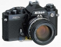

器材库 > 胶片单反相机 > FM3A

规格总览
产品类型
手动对焦胶片单反相机
发布日期
2001-07
厂家推荐价格
96,000.00 （日元）
镜头卡口
Nikon F
取景规格
取景器
眼平五棱取景器, 固定
取景范围
92%
取景放大倍率
0.84X倍
反光镜
自动返回式防震降噪反光镜
景深预视
有
曝光控制
测光模式
中央重点测光
测光范围
1-20EV
曝光模式
A（光圈优先自动曝光）, M（手动测光曝光）
ISO感光度
ISO25-5000，M ISO12-6400
曝光补偿
±2EV以1/3EV级调整
自动包围曝光
无
多重曝光
有
自动曝光锁
有
快门
快门速度
1/4000s~8s，B
闪光同步速度
1/125s秒
B门
有
快门释放
机械控制
自拍
10秒
快门线插孔
有
内置闪光灯
闪光模式
TTL
后帘同步
有
外接闪光灯
PC插孔
有
电源
电池
2XSR44/LR44
外观
尺寸
142.5X90X58mm
重量
570g
忘记了2024-08-13 15:215 分
操作性 5.00功能性 5.00美观性 5.00趣味性 5.00耐用性 5.00性价比 5.00

忘记了2024-08-13 15:20
散客2017-04-01 13:564.92 分
操作性 5.00功能性 5.00美观性 5.00趣味性 5.00耐用性 5.00性价比 4.50
宇声2014-07-11 17:324.83 分
操作性 5.00功能性 5.00美观性 5.00趣味性 5.00耐用性 5.00性价比 4.00
五车半2010-05-12 20:204.75 分
操作性 5.00功能性 5.00美观性 5.00趣味性 5.00耐用性 4.50性价比 4.00
最后手动2010-04-13 19:094.67 分
操作性 5.00功能性 5.00美观性 5.00趣味性 4.50耐用性 4.50性价比 4.00
xzwt2010-02-20 17:034.83 分
操作性 5.00功能性 5.00美观性 5.00趣味性 5.00耐用性 5.00性价比 4.00
abcd1618102010-02-15 13:244.67 分
操作性 4.50功能性 4.50美观性 4.50趣味性 5.00耐用性 4.50性价比 5.00
骏马弯刀2009-09-18 17:144.75 分
操作性 5.00功能性 5.00美观性 5.00趣味性 5.00耐用性 5.00性价比 3.50
大地旋风2009-08-22 21:584 分
操作性 4.50功能性 4.50美观性 4.00趣味性 3.50耐用性 4.00性价比 3.50
工夫茶2008-06-20 23:424.58 分
操作性 4.50功能性 5.00美观性 5.00趣味性 4.50耐用性 4.50性价比 4.00
hwa2008-03-03 11:294.33 分
操作性 4.50功能性 4.50美观性 4.50趣味性 4.50耐用性 4.00性价比 4.00
红豆柳叶飞2007-12-05 10:164.75 分
操作性 4.50功能性 5.00美观性 4.50趣味性 5.00耐用性 5.00性价比 4.50
该产品暂无存档的产品图
评测 / 相关文章
该产品暂无存档的评测文章